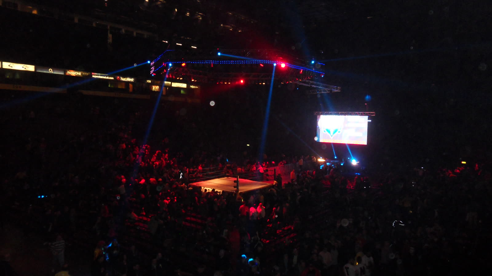

Tony Wrestling è tornato (e stavolta per restare)
Quasi due anni di silenzio, nessuna spiegazione. Oggi vi racconto perché sono sparito, cosa mi è mancato e cosa arriva adesso.
Sono passati quasi due anni dall'ultima volta che mi avete visto. Due anni in cui Tony Wrestling è semplicemente sparito. Niente video, niente post, niente spiegazioni. Oggi ve lo devo, quindi parto da qui: vi spiego perché.
Chi sono, per chi arriva adesso
Se sei nuovo da queste parti: io sono Tony, e parlo di wrestling. News, storie, vlog agli eventi, interviste (sì, anche quella con Santino Marella) e il podcast The Showcase.
Nel primo anno abbiamo fatto quasi 20 milioni di visualizzazioni tra TikTok, Instagram e YouTube. Mi invitavano agli eventi. Per uno cresciuto davanti alla TV a guardare wrestling, era un sogno.

Perché sono sparito
La verità è meno romantica di quanto sembri:
- Non ci guadagnavo niente. Ore e ore di lavoro, e zero entrate.
- Facevo tutto da solo: ricerca, video, montaggio, grafiche, pubblicazione.
- Dovevo costruirmi un lavoro vero: i contenuti, i brand, le bollette.
E a un certo punto ho staccato. Senza dirvi niente. Questo è l'errore di cui vi chiedo scusa.
Cosa mi è mancato
I vostri commenti. Gli eventi. Parlare di wrestling con voi. Il wrestling non ho mai smesso di seguirlo: l'ho solo guardato da solo. E vi assicuro che guardarlo da solo non è la stessa cosa.
Perché adesso
Oggi è diverso. Ho imparato a fare contenuti di lavoro, ho un metodo, ho un'organizzazione e non sono più solo a fare tutto.
Stavolta non riparto di pancia. Riparto con un piano.
Cosa arriva adesso
Ecco le rubriche che troverete qui e sui social:
- Flash News: le notizie della settimana, dritte al punto
- Lo sapevi che e 5 curiosità
- Bordering: una rubrica nuova dove vi spiego cosa succede davvero sul ring
- Reaction
- I video lunghi: L'ascesa e il declino di… e La vera storia di…
- Live su Twitch durante i grandi eventi
- E qualche sorpresa, a partire da questo blog e dal merch
Stavolta resto
L'altra volta che ho detto "sono tornato" non ce l'ho fatta. Lo so, e lo sapete anche voi. Stavolta torno per restare.
Se ci sei, iscriviti al canale YouTube, attiva la campanella e scrivi nei commenti "CI SONO". Il video del ritorno esce lì venerdì 16 ottobre. E subito dopo si parla di WarGames.
Io sono Tony Wrestling. Bentornati. E bentornato anche a me.
Domande frequenti
Perché Tony Wrestling era sparito?
Non ci guadagnava niente, faceva tutto da solo (ricerca, video, montaggio, grafiche) e doveva costruirsi un lavoro vero.
Quando esce il video del ritorno di Tony Wrestling?
Venerdì 16 ottobre, sul canale YouTube di Tony Wrestling.